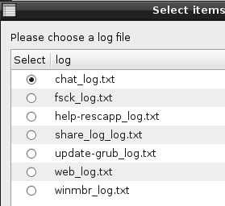
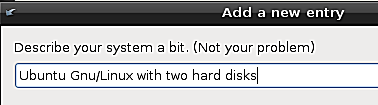
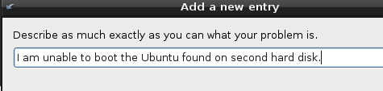
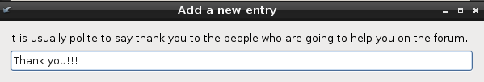
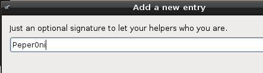
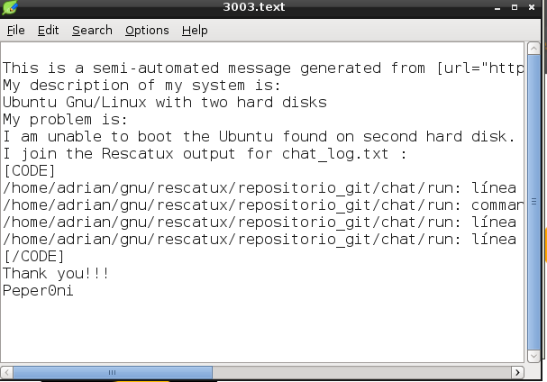
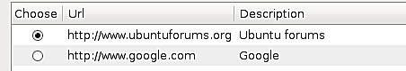
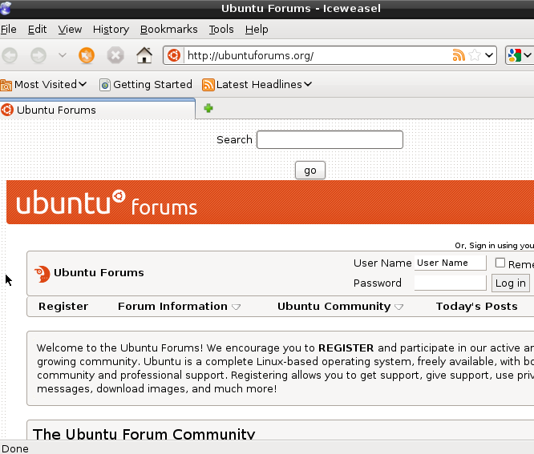

Compartir log en Forum - Rescapp - Documentation
-
Paso 1Rescapp busca ficheros de log que han sido generados por otras opciones de Rescapp.
-
Paso 2Se le pregunta por los ficheros encontrados:Please choose a log file. Es decir, por favor elija un fichero log.

-
Paso 3Rescapp le hace algunas preguntas para mejorar el post




-
Paso 4Se le muestra el fichero de log.

-
Paso 5Se le pregunta por algunos foros predeterminados (ubuntuforums, ...).

